Couverture de match
Avant-match, action, réactions, détails et sélection éditée prête à publier.
Clubs · joueurs · médias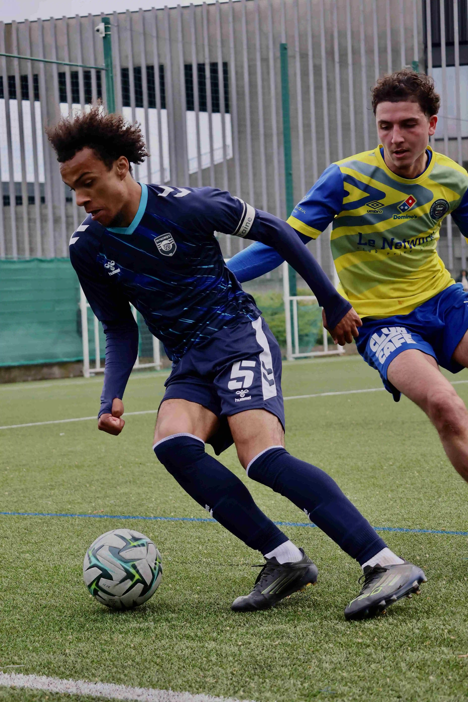
Photographe sportif - Hauts-de-France
Des images faites pour vivre après le coup de sifflet.
NLT.Visual
Découvre mon travail dans ce portfolio de réalisations, séries et projets. Chaque match, chaque joueur et chaque club a son contexte.
Réalisations
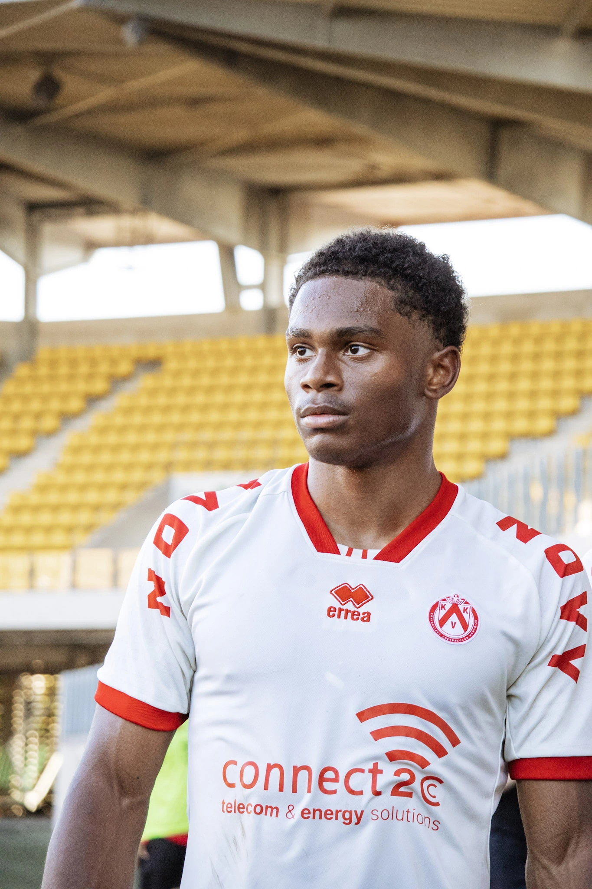
Photo sportive
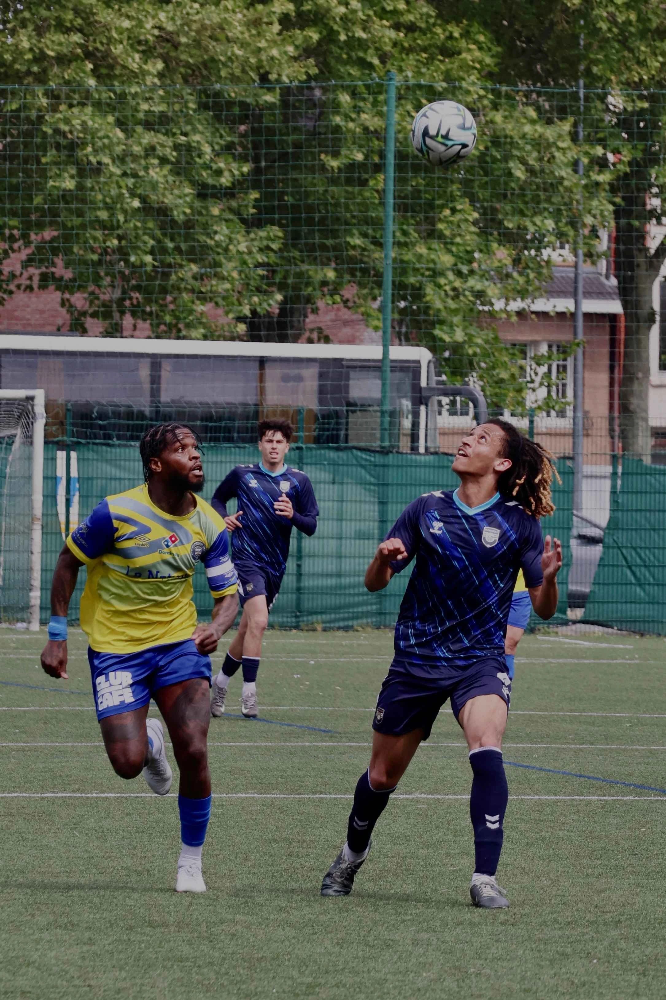
Client · OMF
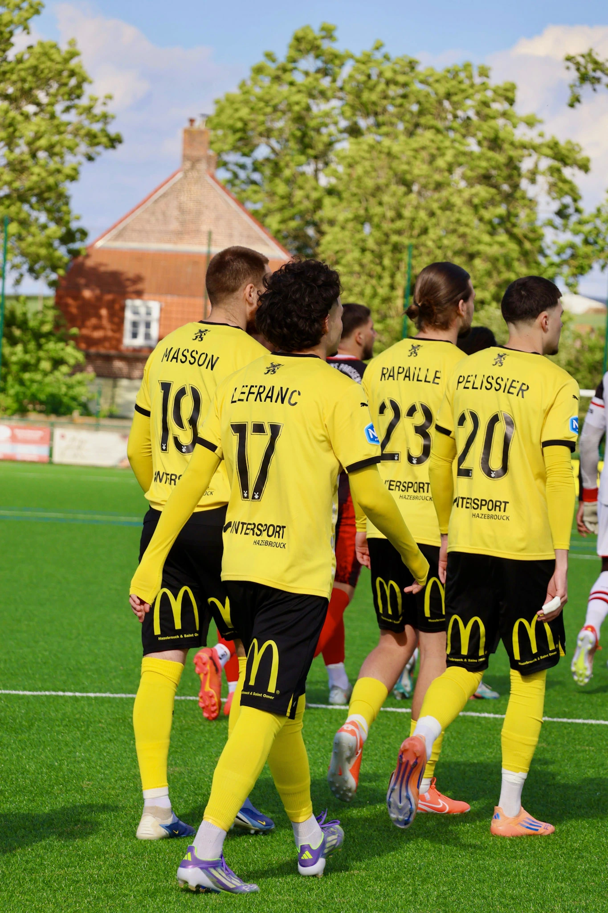
Photo sportive
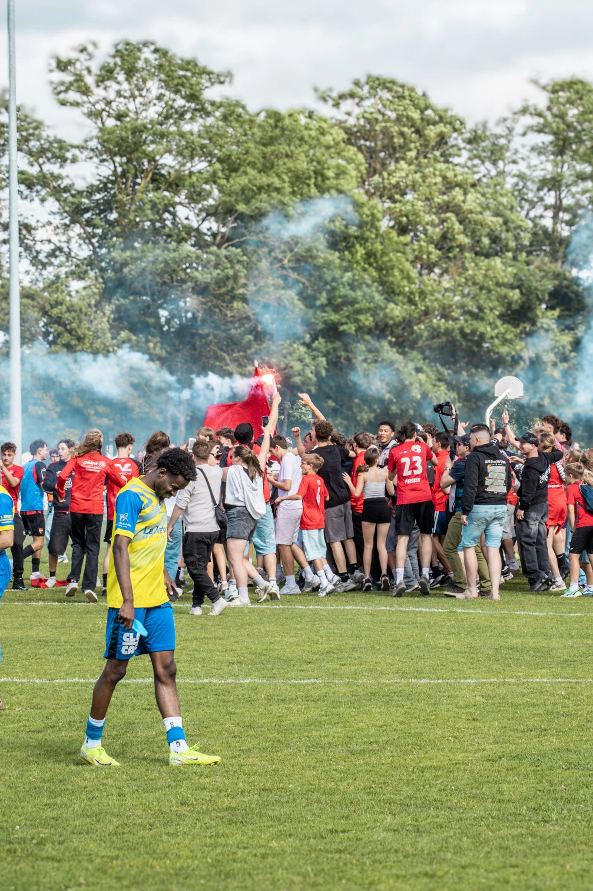
Client · OMF
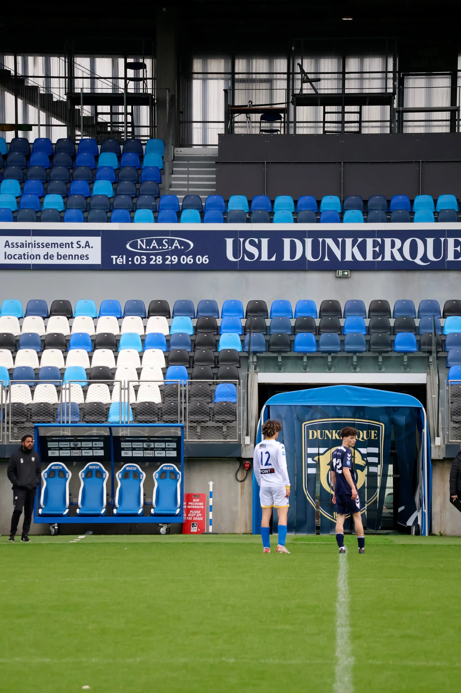
Photo sportive

Client · OMF
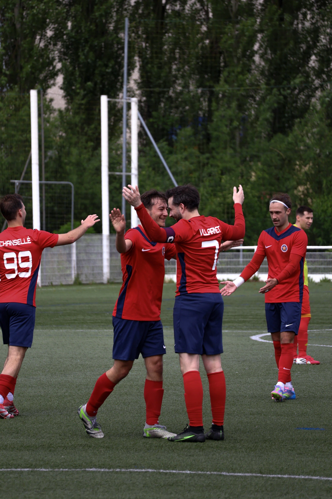
Client · AS Marcq
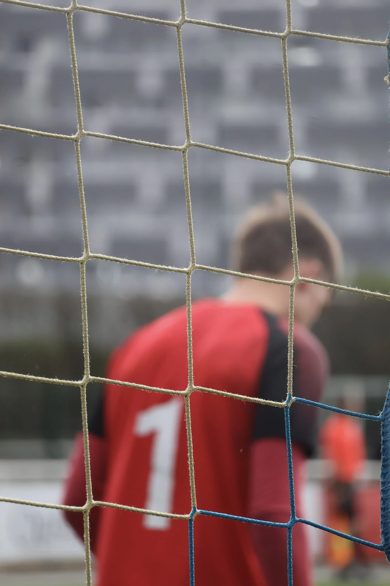
Photo sportive
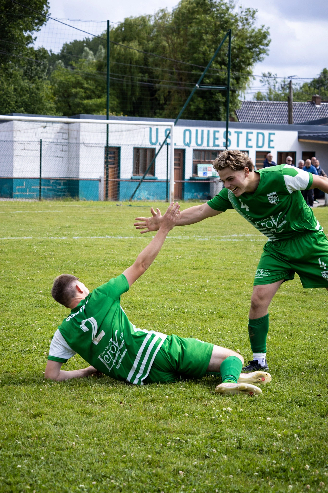
Client · US Quiestède
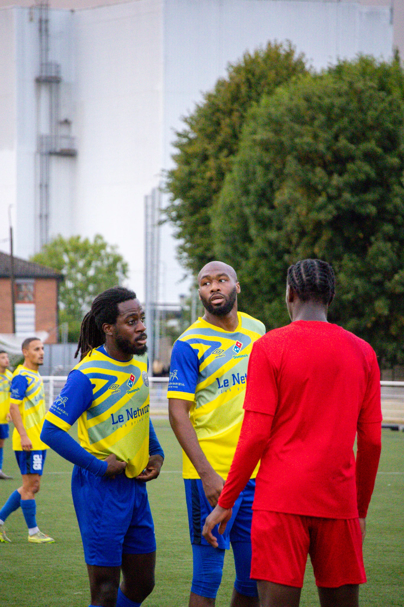
Client · OMF
Prestations
Du contenu adapté à chaque besoin, sur le terrain comme en dehors.
Parler de votre projet ↗Avant-match, action, réactions, détails et sélection éditée prête à publier.
Clubs · joueurs · médiasPortraits dirigés, images d’action et contenu personnel autour de l’identité du joueur.
Joueurs · agents · académiesUn traitement spécifique du poste : appuis, geste, équipement, portrait et explosivité.
Gardiens · coachs · marquesMatchday, entraînement, coulisses, staff et banque d’images pour nourrir la communication.
Clubs amateurs · semi-pro · professionnelsUne série cohérente de portraits pour affiches, fiches joueurs, partenaires et réseaux.
Clubs · structuresPhotographie produit ou athlète dans un langage crédible et directement lié au football.
Équipementiers · marques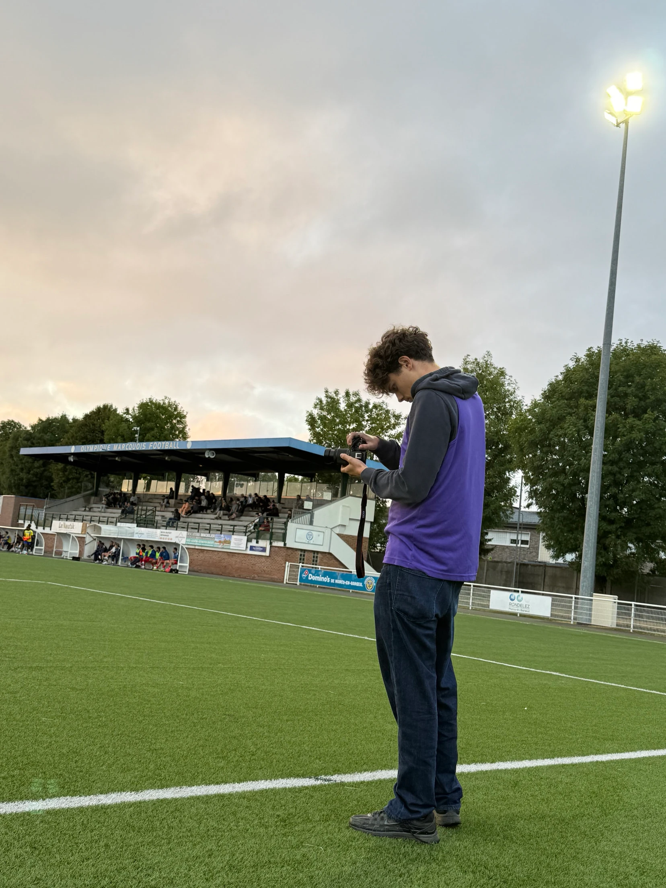
À propos
Je travaille autour du football, principalement dans le Nord et le Pas-de-Calais. Sur un match, je cherche autant l’action que ce qui l’entoure : les regards avant d’entrer, les détails, le banc, le public, le moment juste après.
Mon objectif n’est pas de livrer une pile de fichiers. C’est de construire une sélection cohérente qu’un joueur ou un club peut réellement utiliser.
Contact
Envoie-moi le contexte, la date et l’usage prévu des images. On voit rapidement ce qu’il faut produire.
@nlt.visual ↗ titrentnolann@gmail.com